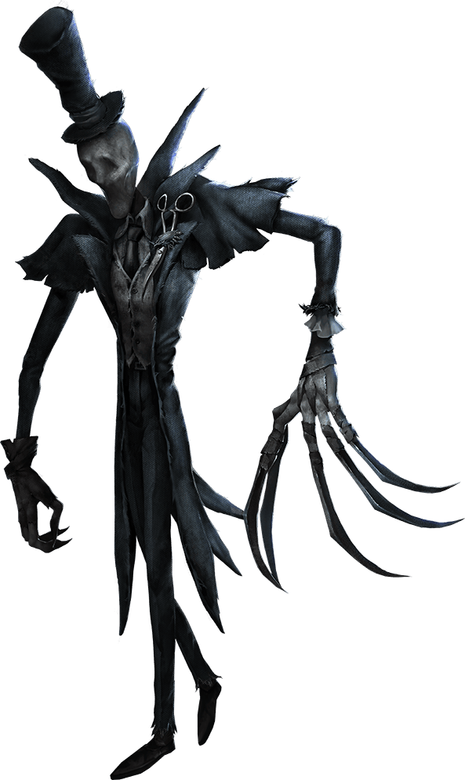

Identity
V
Return

The Ripper
Background Story
- Before becoming "The Ripper", he was a student of
James Whistler, a renowned artist influenced by
Edgar Degas.
Who would guess that a
well-dressed gentleman during the day will,
when darkness falls, walk into an alley and
stalk poor women?
As "The Ripper" gained infamy, the boundary
between his two identities began to fade.Of course,
before you see his true face, "The Ripper"
is still happy to take a walk at night.
Character Setting
- Character day： August
- Interests： Anatomy
- Talent： Sneaking
- Likes： Foggy Night